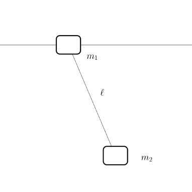

carlaaf10 lug 2018, 15:07
Nel pendolo in figura la massa in alto è libera di scorrere orizzontalmente senza attrito. Determinare la frequenza delle piccole oscillazioni attorno alla posizione di equilibrio.

- D437938E-B4E1-40C8-892D-26DBAC9A0360.jpeg (10.86 KiB) Visto 10740 volte
.Ruben.10 lug 2018, 17:36
Per caso é: \(\frac{1}{2\pi} \sqrt{\frac{(m_1+m_2)g}{m_1 L} }\)?
Gamow0010 lug 2018, 19:26
Sì dovrebbe essere così, viene anche a me
carlaaf10 lug 2018, 21:18
Giusto! Posta pure la soluzione e poi la staffetta è tua!
nicarepo11 lug 2018, 12:53
Spero che non vada contro le regole del forum scrivere una soluzione dopo il post di un altro utente. Comunque l'esercizio si dovrebbe fare così: l'equilibrio del pendolo si ha quando le due masse sono allineate verticalmente. Se l'equilibrio viene perturbato l'unica forza agente sul sistema è il peso di \(m_2\). Essendo una forza verticale, l'ascissa del centro di massa non si muove, e supponendola inizialmente zero si può scrivere:
\(x_1m_1+x_2m_2=0\) dove \(x_1\) e \(x_2\) sono le posizioni delle due masse sulle ascisse. Quindi \(x_2=-x_1m_1/m_2\)
A questo punto, scomponendo il peso in componente radiale e tangenziale, e notando che \(m_2\) non subisce accelerazioni radiali, si può affermare che la tensione della corda è uguale a:
\(T=m_2gcos({\alpha})\) dove \({\alpha}\) è l'angolo di inclinazione dalla verticale. La stessa tensione agisce su \(m_1\), quindi la forza orizzontale è:
\(F=Tsen({\alpha})=m_2g/2* sin(2{\alpha}) \approx m_2g{\alpha}\)
Geometricamente si nota che \(lsen({\alpha})=|x_1|+|x_2|\) di conseguenza \(sen({\alpha})\aprox{\alpha}=[x_1(m_2+m_1)]/lm_2\)
Sostituendo:
\(F=\frac{d^2x_1}{dt^2}m_1=\frac{m_2g}{l}x_1(1+\frac{m_1}{m_2})\)
Da cui la frequenza trovata in precedenza.
carlaaf12 lug 2018, 13:31
La soluzione di nicarepo è corretta. Se ruben è d’accordo può anche passare a te la staffetta, ergo chiunque tra voi due abbia un porblema 156 pronto può andare!
nicarepo12 lug 2018, 18:08
Va bene, comunque dato che è la prima volta che consulto il forum, potreste spiegarmi le regole? Per esempio quale deve essere il tipo di esercizi che si può proporre?
Inoltre avrei una curiosità personale, coloro che prendono parte a queste discussioni sono studenti liceali che partecipano o hanno partecipato alle Olimpiadi della Fisica? Tra costoro c'è qualcuno che concorre per la Scuola Normale Superiore?
.Ruben.12 lug 2018, 18:11
Io sono d'accordo
Mi applicherò per risolvere la prossima :)
Aleksej9912 lug 2018, 18:13
@nicarepo: Si la maggior parte degli utenti più attivi ha partecipato alle olimpiadi di fisica (fase nazionale)... E credo molti del 99 proveranno in Sns, provi anche tu?
Pigkappa13 lug 2018, 0:08
@nicarepo
Non abbiamo mai fissato regole stringenti per la staffetta. Posta un problema di fisica che ti sembri interessante di qualsiasi livello. Se nessuno fa progressi entro 2-5 giorni posta un hint. Se nessuno fa progressi posta la soluzione. La staffetta passa a chi lo risolve o, se proprio nessuno riesce a fare nulla, può passare a chiunque la voglia prendere. Benvenuto :D
La maggior parte degli utenti attivi sono studenti pre-università inclusi studenti che proveranno alla SNS la maggior parte dei moderatori sono ex olimpionici di fisica che hanno conseguito la laurea in fisica.